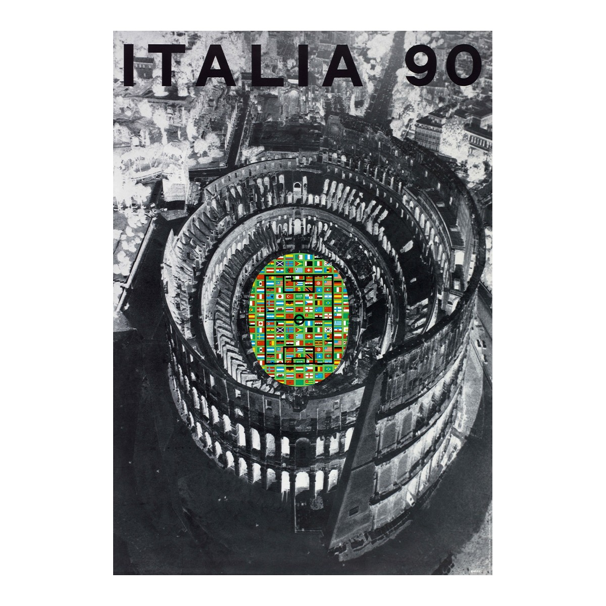
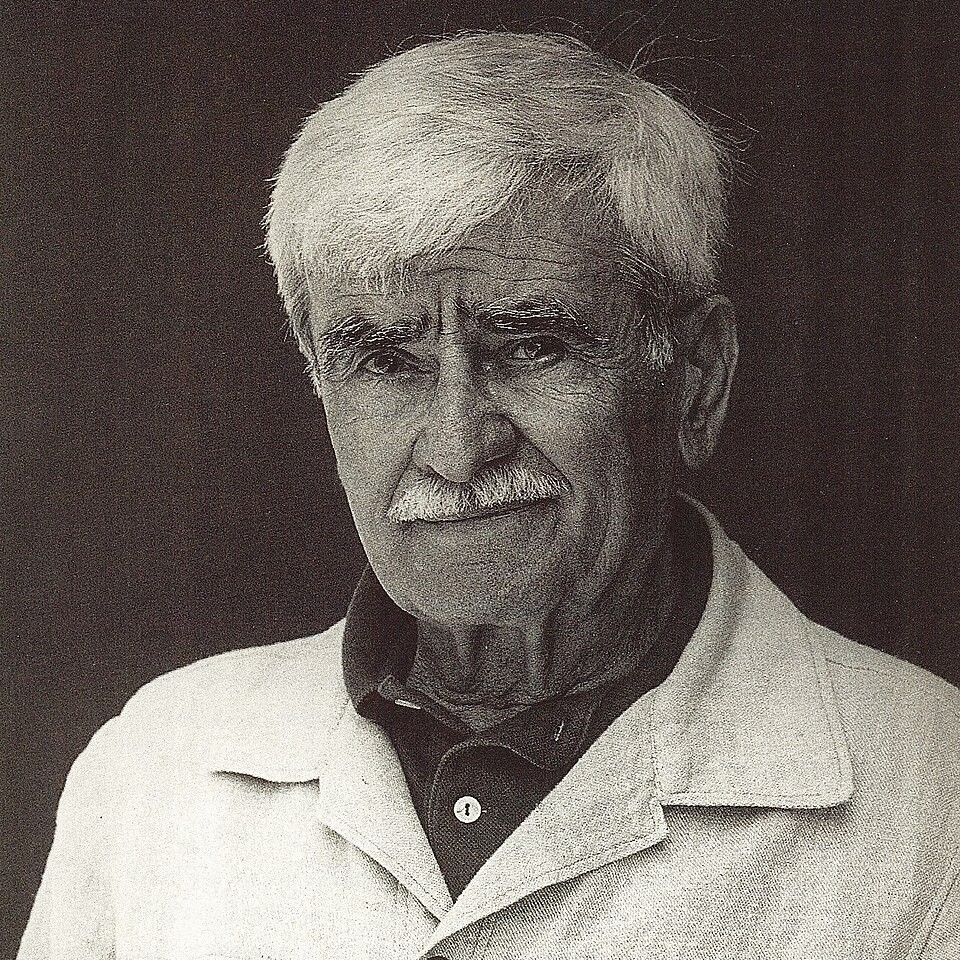

Official Poster
The official 1990 FIFA World Cup poster was designed by the renowned Italian artist Alberto Burri. It features a digitally elongated, photo-negative image of the Colosseum in Rome, which serves as a "theatre of football".
A black and white, negative-style image of the Colosseum.
A green football pitch is superimposed in the center of the Colosseum.
The pitch is bordered by the flags of the 24 participating nations.
The design deliberately links modern football to the spirit of gladiatorial Rome.
It includes bold lettering for "ITALIA '90" and the official FIFA logo.

Alberto Burri
Alberto Burri (12 March 1915 – 13 February 1995) was an Italian visual artist, painter, sculptor, and physician based in Città di Castello. He is associated with the matterism of the European informal art movement and described his style as a polymaterialist. He had connections with Lucio Fontana's spatialism and, with Antoni Tàpies, an influence on the revival of the art of post-war assembly in the United States (Robert Rauschenberg) as in Europe.
In 1987 Burri created the official 1990 FIFA World Cup posters. The Umbria Jazz Festival used the Sestante series for the 2015 edition poster, celebrating the artist's centenary of birth.